東京 → （サンライズ瀬戸） → 岡山 → 松山
公開日：
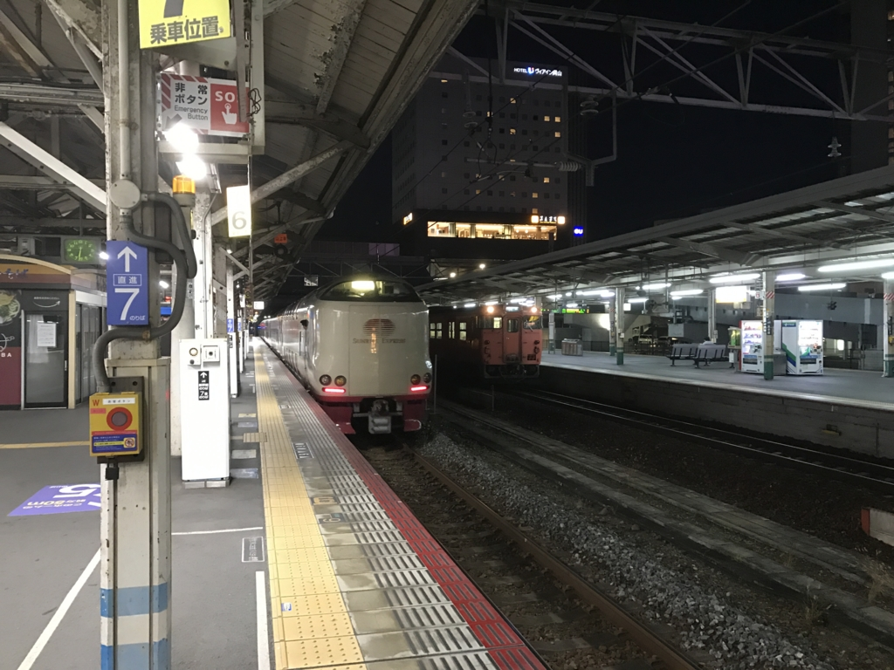
寝台列車は飛行機より高くつくけれど、繁忙期でも運賃が上がらない。つまり、お盆やお正月は相対的にお得になる（なお、それでも飛行機の方が安い模様）。――そんなわけで、今回は東京から松山への帰りにサンライズ瀬戸を使いました。
1年9カ月ぶり2回目の乗車。
みどりの窓口で予約
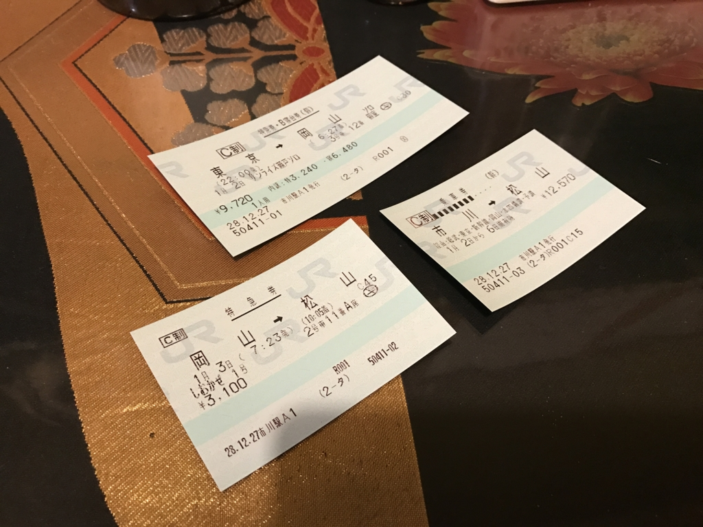
切符は JR 市川駅のみどりの窓口で予約した。前回は JR 松山駅で予約したせいか、割とすんなり切符が買えたのだけど、JR 市川では多少手間取った。まぁ、千葉から愛媛・松山にまで行く人はそんなに多くないだろうからね、仕方ないね。「（始発駅から）松山駅までの切符」をいきなり頼むのではなく、
- （始発駅から）JR 松山駅までの乗車券
- （始発駅から）JR 岡山駅までの寝台券・特急券
- JR 岡山駅から JR 松山駅までの特急券
の3つを発券してくれと頼んだらすんなりいくと思う。
ちなみに、ダイヤはこんな感じになる。
| 駅 | サンライズ瀬戸・出雲 | しおかぜ1号 | いしづち1号 |
| 東京 | 22:00 | ||
| 岡山 | 06:27 | 07:23 | |
| 高松 | 07:27 | 07:37 | |
| 宇多津 | 07:59 | （←連結） | |
| 松山 | 10:05 |
岡山駅で特急しおかぜ1号を1時間待つか、終点まで寝台でゴロゴロして高松駅から特急いしづち1号に乗るか（追加料金がかかる）か。どっちにしろ、松山駅の到着時刻は変わらない。前回はたまたま後者を楽しんだので、今回は前者を試してみた……けど、正直暇なので後者でもいいかもしれん。
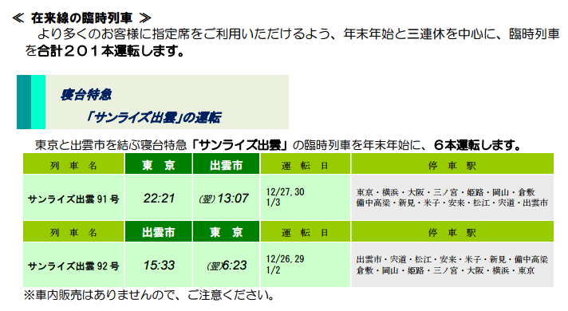
あと、たまたまこの日はサンライズ出雲（岡山までは瀬戸と同じ）が増発されていたので、そっちを選んでもよかったかもしれない。岡山着は 08:48 なので、どっちにしろ しおかぜ との接続は最悪だけど。
貧乏性なのでまたソロを買ってしまった
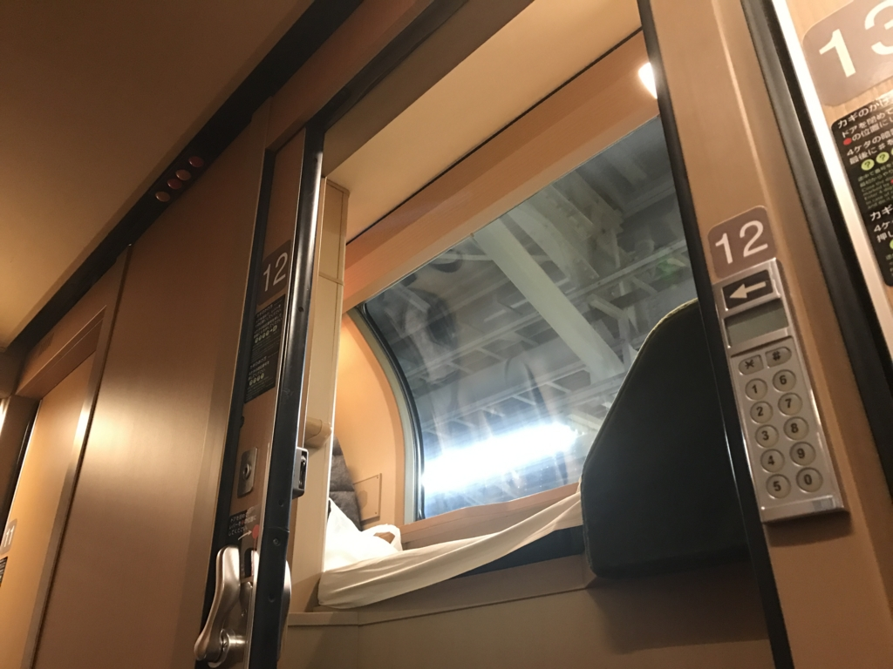
等級は前回と同じソロを予約。あとでシングルにしとけばよかったなぁ、と思ったけど後の祭りですな。
ソロとシングルの違いは、
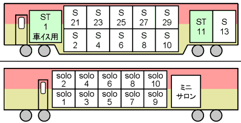
- 天井の高さ：シングルはダブルデッカーを上下構造に（天井185cm）、ソロはシングルデッカーを上下段構造に（天井145cm）にしている
- モーター：ソロはシングルデッカー≒車両下にはモーターが配置されてる（騒音や振動があるかも）
- 部屋の広さ：ベッドの幅は同じだが、足元はソロの方が狭い（シングル：60cm、ソロ：55cm）
- 設備：シングルにはミニテーブルがあるみたい
ということのようだ（参照：寝台列車の館）。個人的にはソロで平気だけど、金額差は 1,000 円みたいなので、シングルの方がよさそう。
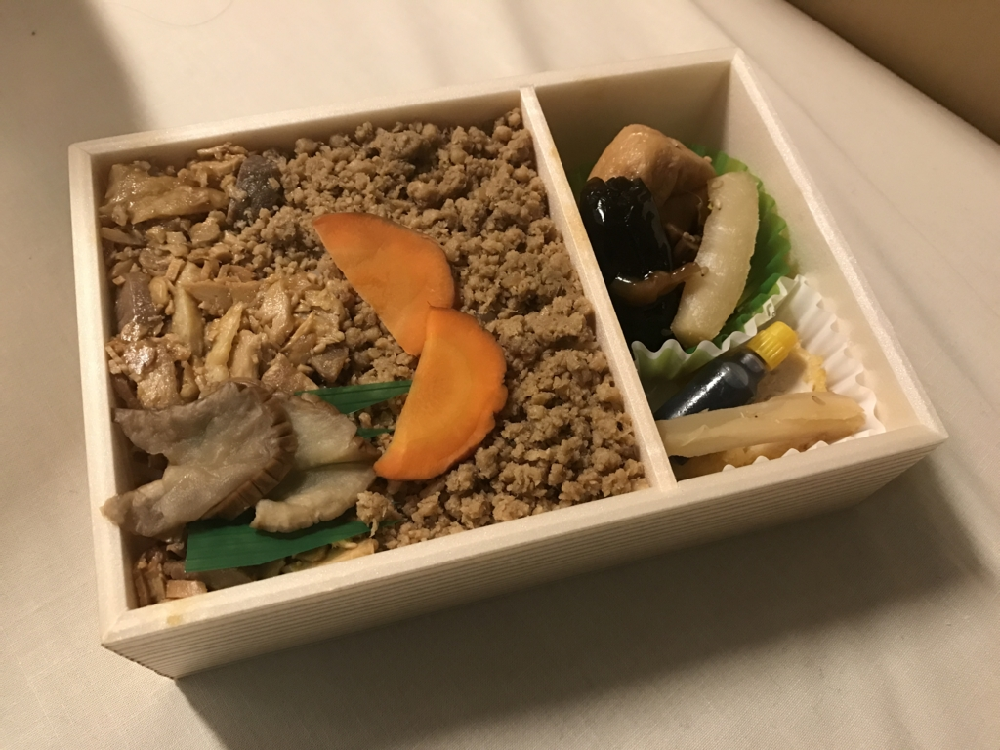
ソロはどうしてもベッドに胡坐かいてごはんを食べる羽目になるので、テーブルがあるのはうれしいかも（今回は東京駅で購入した“秋田 比内地鶏のいいとこどり弁当”を食べた）。
シャワーった
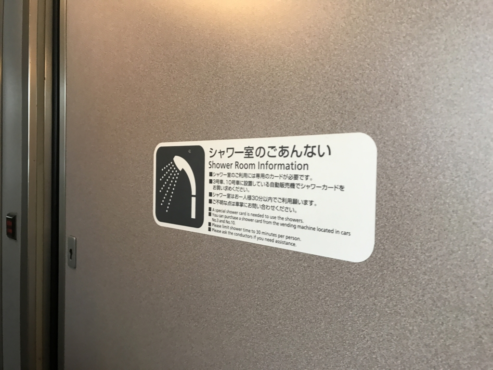
今回はシャワーも使ってみたよ。
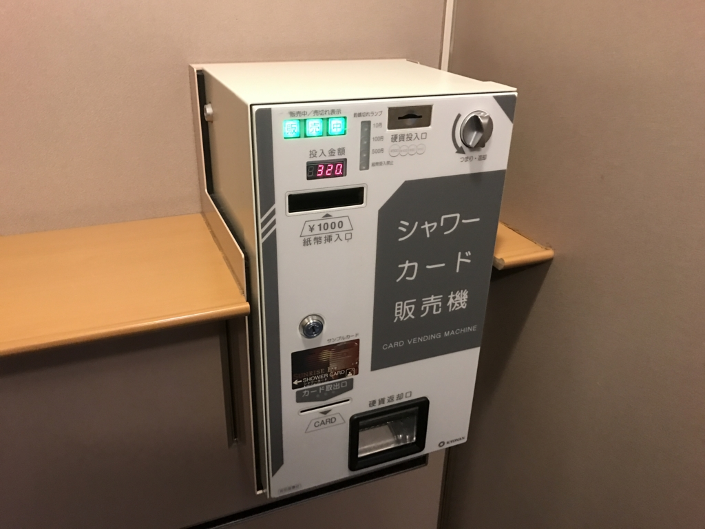
まずはシャワー室の近くにある“シャワーカード”というものを320円で購入。
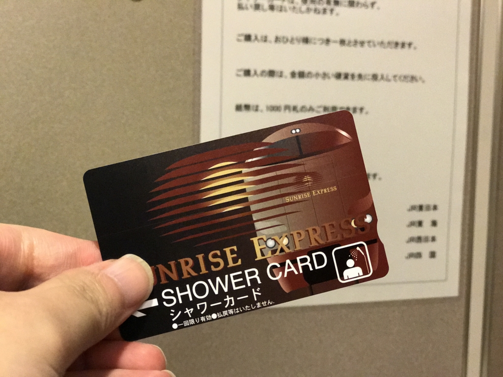
これが“シャワーカード”やな。ちなみにタオルなどの販売はないので、自分で用意しておくこと（むかしはあったのかな？ 記念タオルがほしいヒトもいそうだし、今治タオルでも売ればいいのにと思った）。
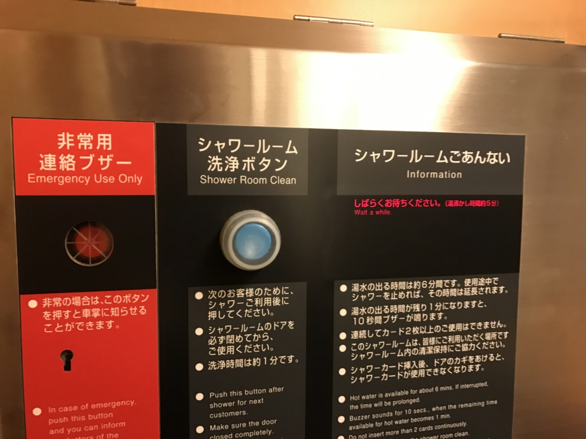
待つこと30分で順番が回ってきた。部屋は脱衣所＋シャワー室からなっていて、脱衣所には風量が微妙なドライヤーまで完備されている。
使い方がいまいちわからないので、カードの差し込み口っぽいところにカードを突っ込んでみた……が、とくに反応はない。「もしかして変なところにカードを刺してしまったのか？（かなり奥まで刺しちゃったから抜けねーよ！！）」と一瞬焦ったけど、どうやら湯沸かし中のようで、“しばらくお待ちください”というメッセージが点灯されている。仕方がないので、すっぽんぽんのまま、ちんちん揺らして遊びながら待つ。
しばらくすると、なんかカードが回収されたっぽい音がする。“しばらくお待ちください”というメッセージも消えていた。どうやら湯沸かしが完了したらしい。
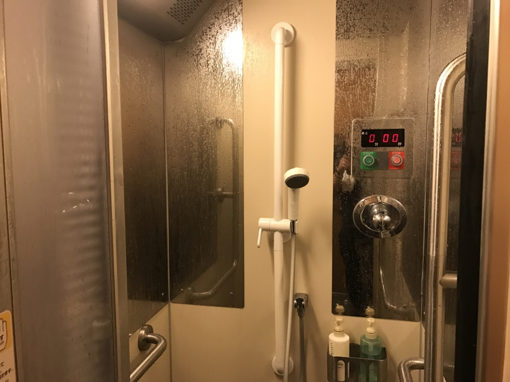
というわけで、突撃。タオルの販売はないのに、シャンプーとボディソープは完備なんだな。
シャワーは6分間利用可能で、使い始めるとカウントダウンが始まる。小心者なので、残り時間が少なくなるとちょっと不安になってしまうぜ……。とはいえ、男の子なのでそれほどシャワーに時間はかからず、2分半ほど余してシャワー室を出た。髪の長い女の人なんかは、ちょっと時間が足りなくて大変だったりするのかもしれない。
最後に“洗浄ボタン”というのを押して、次のヒトと交代した。この“洗浄ボタン”が何をするのか気になったが、変にシャワー室を開けてえらいことになったりしたら困るのでやめておいた。たぶん、シャワー室をバババーッと洗って、また湯沸かしでもするんだろうな。
大都会・岡山駅に到着
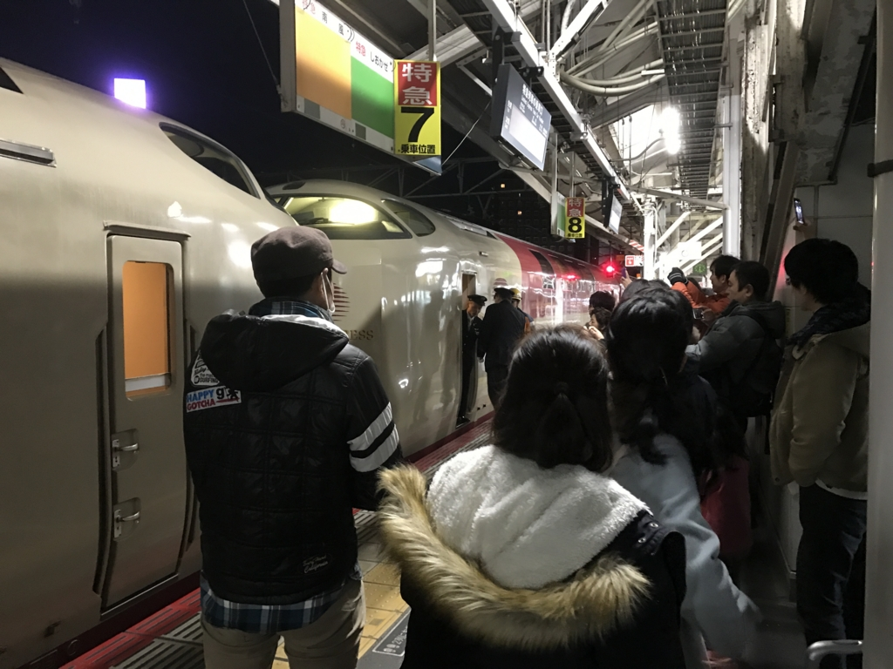
大阪あたりまで読書したり、外をぼーっと眺めたりしていたが、いつの間にか寝落ち。目が覚めると、大都会・岡山へ到着するというアナウンスが流れてきた。そそくさと荷物をまとめてホームに降り立つと、サンライズ瀬戸と出雲の解結を眺める人たちでごった返していた。
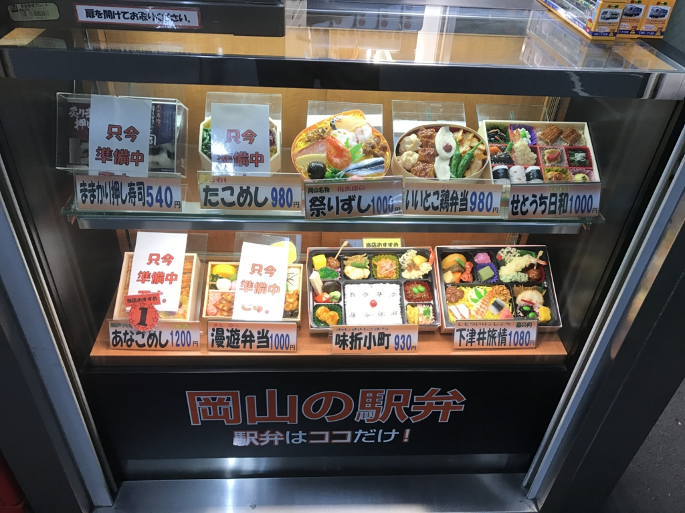
自分は朝ご飯を確保。ほんとうはママカリ押し寿司とかタコ飯が食べたかったのだけど、残念ながら置いてなかった。
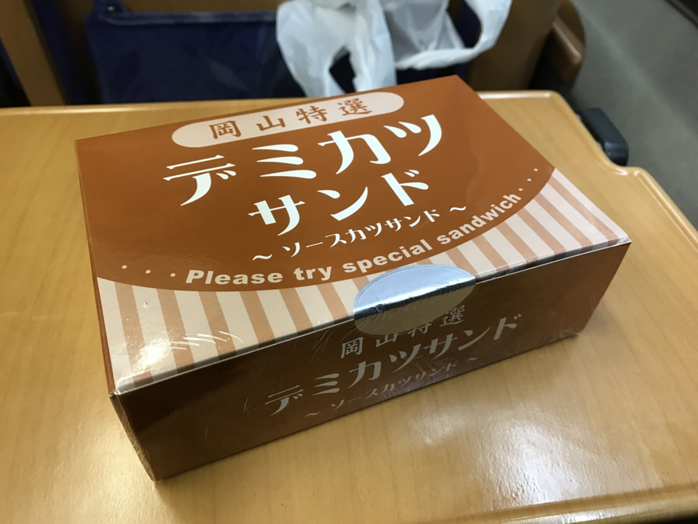
ので、デミカツサンドを確保。
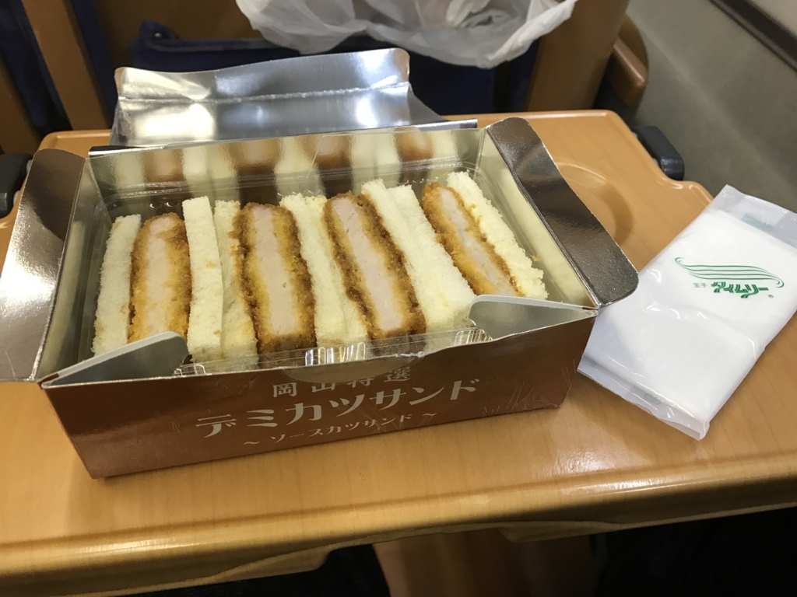
これはなかなか美味しかった。万世のカツサンドっぽい雰囲気がある。さすが大都会だと思った。
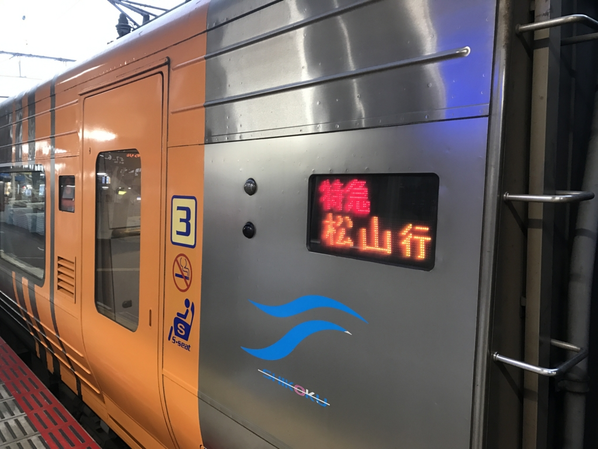
高知行きの特急・南風を見送ったりしながら、待つこと45分ほどでやっとこさ しおかぜ が入線。指定席に腰を落ち着けると、なんか急に安心して、眠気が襲ってくる。
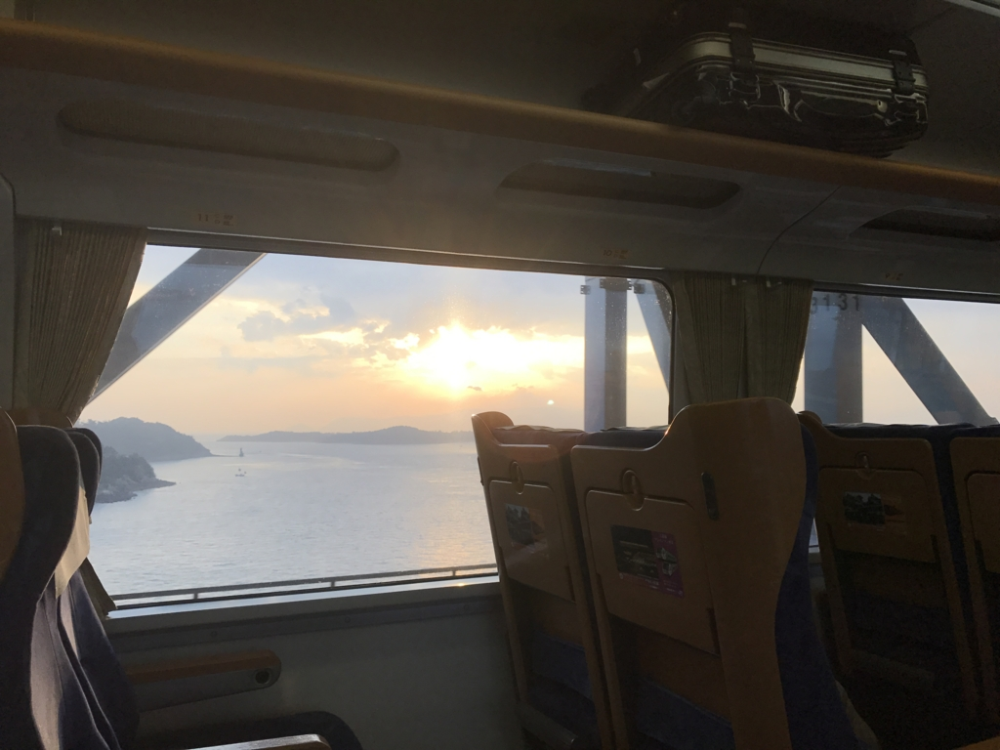
朝日を左手に見ながら瀬戸大橋を渡ったところまでは辛うじて覚えているのだけど、そのあとはガッツリ熟睡してしまったようで、気が付くと列車は松山駅に止まっていた。
さすがに12時間もかかるのは疲れるなー。松山まで寝台車で帰れたらいいのに！